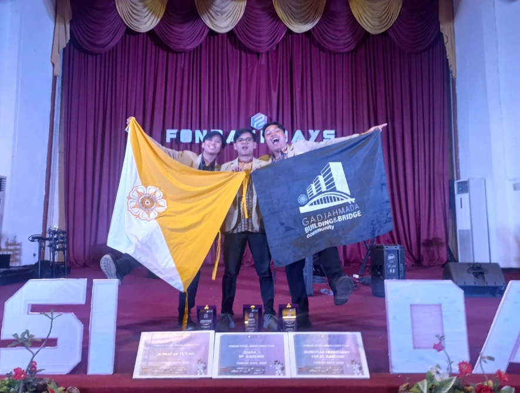
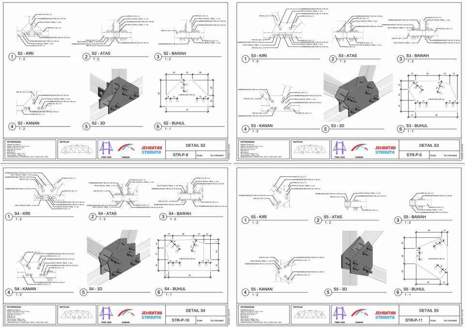
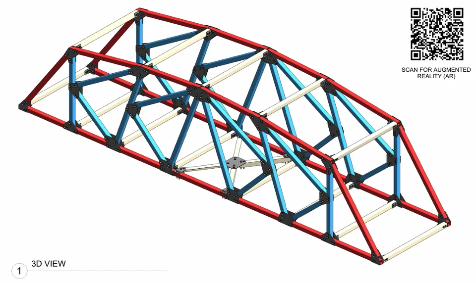
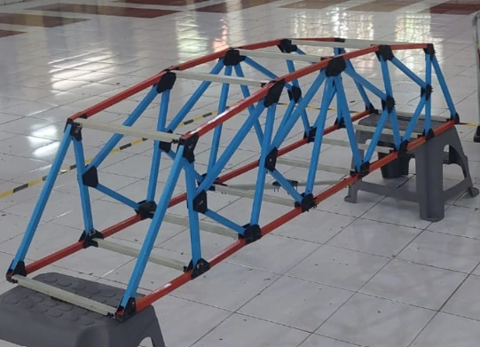

Sthirata Bridge —
Fondasi Steel Bridge Competition UNS 2025
An award-winning steel bridge design that captured three distinctions at the national Fondasi Steel Bridge Competition hosted by Universitas Sebelas Maret (UNS) in 2025.

About the Bridge
The Sthirata Bridge — named from Sanskrit meaning "stability" and "steadfastness" — is a steel bridge design created for the Fondasi Steel Bridge Competition at UNS 2025. The design prioritizes both structural integrity and architectural expression, resulting in a form that stands out among national competitors.
The bridge achieved a rare triple award: the overall 1st Place prize, plus two special recognition awards for engineering precision and design uniqueness — a testament to the balance between aesthetic ambition and structural rigor.
Design Concept
The design concept for Sthirata drew inspiration from the idea of a bridge as a connector between not just two banks, but two states of being. The structural system employs a truss configuration optimized for the competition's loading specifications, while the profile introduces a distinctive visual rhythm that earned the "Most Unique" recognition.
Engineering Highlights
- Optimized steel truss geometry and structural analysis for maximum efficiency under competition loading conditions
- Precise member sizing and connection design achieving the Best Precision award
- Unique visual profile differentiating the design from conventional competition entries
- BIM Model for detailed engineering drawings, quantity takeoff, and construction schedule
- Detailed fabrication drawings for physical model construction


